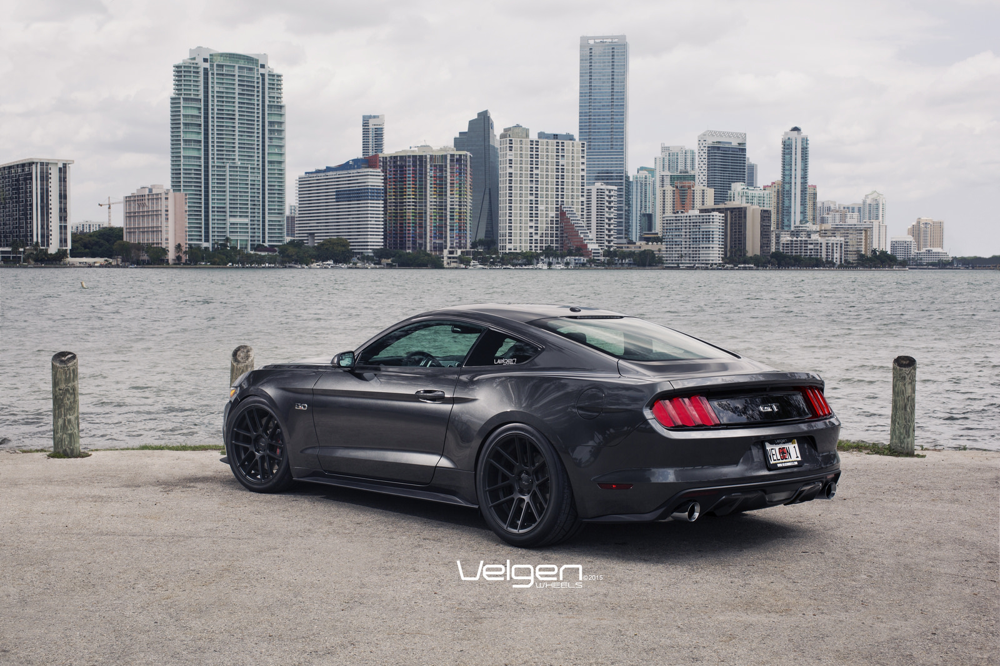

The Ford Mustang is a really good pick.
There are many great models of the car but the best looking one is by far the s550 Gt.
The cars is amazingly great for speed and showing of but as I said before it can only seat two.

There are mustangs that do seat four people with good leg room but those models are rare and it doesn't look as good it does normally.
The four door Mustang still is pretty but it's pretty rare to find because you can get a Charger for a cheaper price.
Overall the car still is amazing but it's not my first choice.
he coolest pat about the mustang is the blinker signals. They blink in a pattern from left to right or right to left (Depends on which side your turning).
The blinker is like the most iconic thing about the car is the blinker. The blinker blinks from left to right or from right to left.</p>
It all depends on the direction of the turn the car is making.